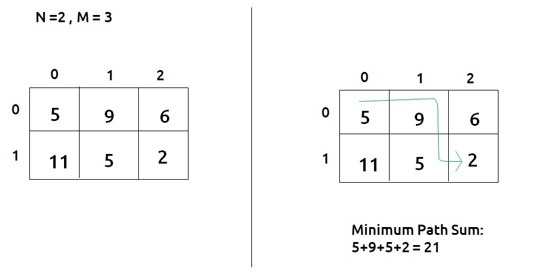
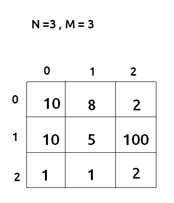
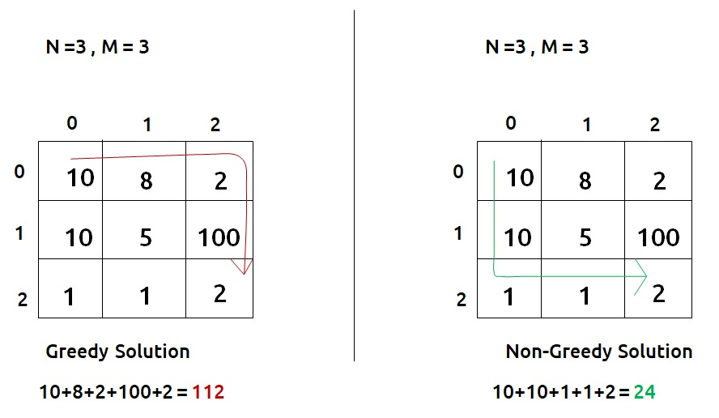
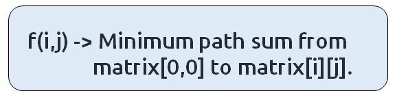
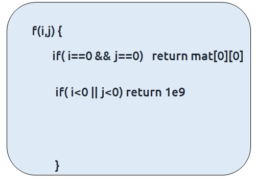
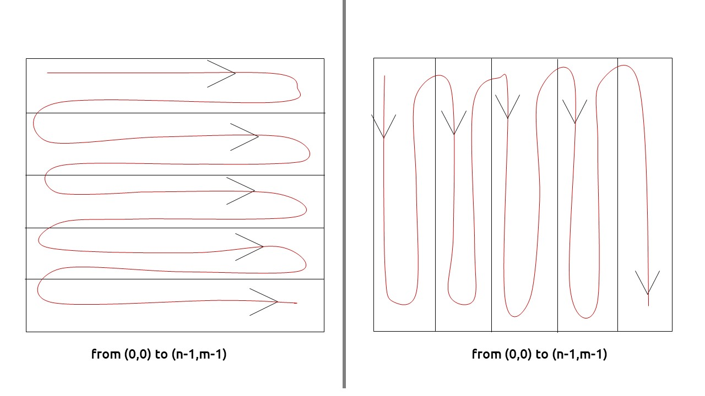
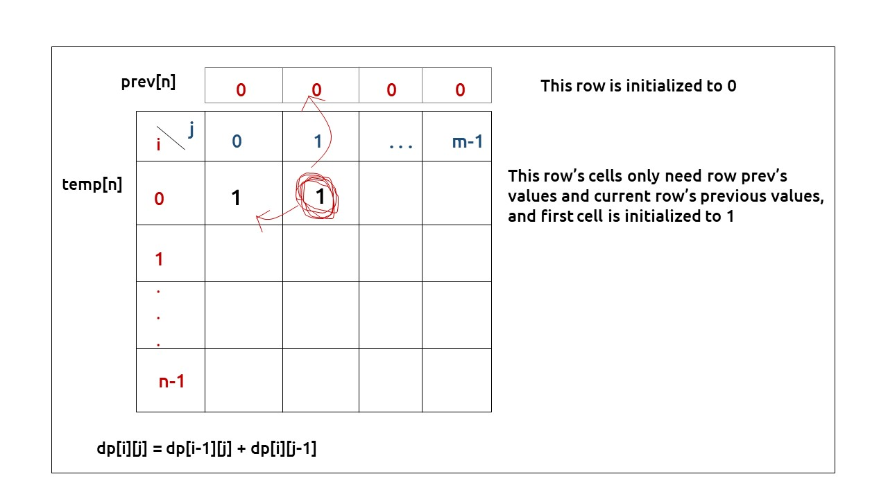

In this article, we will solve the most asked coding interview problem: Minimum Path Sum In a Grid.
Problem Link: Minimum Path Sum in A Grid
Problem Description:
We are given an “N*M” matrix of integers. We need to find a path from the top-left corner to the bottom-right corner of the matrix, such that there is a minimum cost past that we select.
At every cell, we can move in only two directions: right and bottom. The cost of a path is given as the sum of values of cells of the given matrix.
Examples
Example: 

Disclaimer: Don’t jump directly to the solution, try it out yourself first.
Memorization Approach
Algorithm / Intuition
This question is a slight modification of the question discussed in Grid Unique Path 2 . In the previous problem, there were obstacles whereas this problem has cost associated with a cell and we need to return the minimum cost path.
Why a Greedy Solution doesn’t work?
As we have to return the minimum path sum, the first approach that comes to our mind is to take a greedy approach and always form a path by locally choosing the cheaper option.
This approach will not give us the correct answer. Let us look at this example to understand:

At every cell, we have two choices: to move right and move down. Our ultimate aim is to provide a path that provides us the least path sum. Therefore at every cell, we will make the choice to move which costs are less.

- Figure on the left gives us a greedy solution, where we move by taking the local best choice.
- Figure on the right gives us a non-greedy solution.
We can clearly see the problem with the greedy solution. Whenever we are making a local choice, we may tend to choose a path that may cost us way more later.
Therefore, the other alternative left to us is to generate all the possible paths and see which is the path with the minimum path sum. To generate all paths we will use recursion.
Steps to form the recursive solution:
We will first form the recursive solution by the three points mentioned in the Dynamic Programming Introduction.
Step 1: Express the problem in terms of indexes.
We are given two variables N and M, representing the dimensions of the matrix.
We can define the function with two parameters i and j, where i and j represent the row and column of the matrix.

We will be doing a top-down recursion, i.e we will move from the cell[M-1][N-1] and try to find our way to the cell[0][0]. Therefore at every index, we will try to move up and towards the left.
Base Case:
There will be three base cases:
- When i=0 and j=0, that is we have reached the destination so we can add to path the current cell value, hence we return mat[0][0].
- When i<0 or j<0, it means that we have crossed the boundary of the matrix and we don’t want to find a path from here, so we return a very large number( say, 1e9) so that this path is rejected by the calling function.
The pseudocode till this step will be:

Step 2: Try out all possible choices at a given index.
As we are writing a top-down recursion, at every index we have two choices, one to go up(↑) and the other to go left(←). To go upwards, we will reduce i by 1, and move towards left we will reduce j by 1.
Now when we get our answer for the recursive call (f(i-1,j) or f(i,j-1)), we need to also add the current cell value to it as we have to include it too for the current path sum.
Step 3: Take the maximum of all choices
As we have to find the minimum path sum of all the possible unique paths, we will return the minimum of the choices(up and left)
The final pseudocode after steps 1, 2, and 3:
Steps to memoize a recursive solution:
If we draw the recursion tree, we will see that there are overlapping subproblems. In order to convert a recursive solution the following steps will be taken:
- Create a dp array of size [n][m]
- Whenever we want to find the answer of a particular row and column (say f(i,j)), we first check whether the answer is already calculated using the dp array(i.e dp[i][j]!= -1 ). If yes, simply return the value from the dp array.
- If not, then we are finding the answer for the given values for the first time, we will use the recursive relation as usual but before returning from the function, we will set dp[i][j] to the solution we get.
Code
#include <bits/stdc++.h>
using namespace std;
// Helper function to find the minimum sum path from (i, j) to (0, 0) in the matrix
int minSumPathUtil(int i, int j, vector<vector<int>> &matrix, vector<vector<int>> &dp) {
// Base cases
if (i == 0 && j == 0)
return matrix[0][0]; // If we are at the top-left corner, the minimum path sum is the value at (0, 0)
if (i < 0 || j < 0)
return INT_MAX; // If we go out of bounds, return a large value to avoid considering this path
if (dp[i][j] != -1)
return dp[i][j]; // If the result is already computed, return it
// Calculate the minimum sum path by considering moving up and moving left
int up = matrix[i][j] + minSumPathUtil(i - 1, j, matrix, dp);
int left = matrix[i][j] + minSumPathUtil(i, j - 1, matrix, dp);
// Store the result in the DP table and return it
return dp[i][j] = min(up, left);
}
// Main function to find the minimum sum path in the matrix
int minSumPath(int n, int m, vector<vector<int>> &matrix) {
vector<vector<int>> dp(n, vector<int>(m, -1)); // DP table to memoize results
return minSumPathUtil(n - 1, m - 1, matrix, dp); // Start from the bottom-right corner
}
int main() {
vector<vector<int>> matrix{
{5, 9, 6},
{11, 5, 2}
};
int n = matrix.size();
int m = matrix[0].size();
cout << "Minimum sum path: " << minSumPath(n, m, matrix) << endl;
return 0;
}
import java.util.*;
class TUF {
// Helper function to calculate the minimum sum path in the matrix
static int minSumPathUtil(int i, int j, int[][] matrix, int[][] dp) {
// Base cases
if (i == 0 && j == 0)
return matrix[0][0]; // If we're at the top-left cell, return its value
if (i < 0 || j < 0)
return (int) Math.pow(10, 9); // If we're out of bounds, return a large value
if (dp[i][j] != -1)
return dp[i][j]; // If we've already calculated this cell, return the stored result
// Calculate the sum of the current cell plus the minimum sum path from above and from the left
int up = matrix[i][j] + minSumPathUtil(i - 1, j, matrix, dp);
int left = matrix[i][j] + minSumPathUtil(i, j - 1, matrix, dp);
// Store the minimum of the two possible paths
return dp[i][j] = Math.min(up, left);
}
// Main function to calculate the minimum sum path in the matrix
static int minSumPath(int n, int m, int[][] matrix) {
int dp[][] = new int[n][m];
// Initialize the DP matrix with -1
for (int row[] : dp)
Arrays.fill(row, -1);
// Call the helper function starting from the bottom-right cell
return minSumPathUtil(n - 1, m - 1, matrix, dp);
}
public static void main(String args[]) {
// Define the matrix
int matrix[][] = {
{5, 9, 6},
{11, 5, 2}
};
int n = matrix.length;
int m = matrix[0].length;
// Calculate and print the minimum sum path in the matrix
System.out.println(minSumPath(n, m, matrix));
}
}
def minSumPathUtil(i, j, matrix, dp):
# Base case: If we are at the top-left corner, return the value of that cell.
if i == 0 and j == 0:
return matrix[0][0]
# Base case: If we are out of bounds (negative indices), return a very large value.
if i < 0 or j < 0:
return int(1e9)
# If we have already calculated the minimum sum for this cell, return it.
if dp[i][j] != -1:
return dp[i][j]
# Calculate the minimum sum path recursively by considering both up and left moves.
up = matrix[i][j] + minSumPathUtil(i-1, j, matrix, dp)
left = matrix[i][j] + minSumPathUtil(i, j-1, matrix, dp)
# Store the minimum of the two possible paths in the DP table.
dp[i][j] = min(up, left)
return dp[i][j]
def minSumPath(n, m, matrix):
# Create a DP table initialized with -1 values.
dp = [[-1 for j in range(m)] for i in range(n)]
# Call the utility function to find the minimum sum path.
return minSumPathUtil(n-1, m-1, matrix, dp)
def main():
# Example matrix with values representing cell costs.
matrix = [[5, 9, 6],
[11, 5, 2]]
n = len(matrix)
m = len(matrix[0])
# Call the minSumPath function and print the result.
print(minSumPath(n, m, matrix))
if __name__ == '__main__':
main()
// Define a function to find the minimum sum path in a matrix
function minSumPath(n, m, matrix) {
// Create a 2D array 'dp' to store intermediate results (memoization)
const dp = new Array(n).fill(null).map(() => new Array(m).fill(-1));
// Define a recursive utility function to find the minimum sum path
function minSumPathUtil(i, j) {
// Base cases
if (i === 0 && j === 0) {
return matrix[0][0];
}
if (i < 0 || j < 0) {
return Infinity;
}
// If the result for this cell has already been calculated, return it
if (dp[i][j] !== -1) {
return dp[i][j];
}
// Calculate the sum of the current cell and the minimum of the two possible paths
const up = matrix[i][j] + minSumPathUtil(i - 1, j);
const left = matrix[i][j] + minSumPathUtil(i, j - 1);
// Store the result for this cell in the memoization table and return it
dp[i][j] = Math.min(up, left);
return dp[i][j];
}
// Start the recursive calculation from the bottom-right cell
return minSumPathUtil(n - 1, m - 1);
}
// Define the matrix as a 2D array
const matrix = [
[5, 9, 6],
[11, 5, 2],
];
// Get the dimensions of the matrix
const n = matrix.length;
const m = matrix[0].length;
// Call the minSumPath function and print the result
console.log(minSumPath(n, m, matrix));
Output: 21
Complexity Analysis
Time Complexity: O(N*M)
Reason: At max, there will be N*M calls of recursion.
Space Complexity: O((M-1)+(N-1)) + O(N*M)
Reason: We are using a recursion stack space: O((M-1)+(N-1)), here (M-1)+(N-1) is the path length and an external DP Array of size ‘N*M’.
Tabulation Approach
Algorithm / Intuition
Tabulation is the bottom-up approach, which means we will go from the base case to the main problem.
The steps to convert to the tabular solution are given below:
- Declare a dp[] array of size [n][m].
- First initialize the base condition values, i.e dp[0][0] = matrix[0][0]
- Our answer should get stored in dp[n-1][m-1]. We want to move from (0,0) to (n-1,m-1). But we can’t move arbitrarily, we should move such that at a particular i and j, we have all the values required to compute dp[i][j].
- If we see the memoized code, values required for dp[i][j] are: dp[i-1][j] and dp[i][j-1]. So we only use the previous row and column value.
- We have already filled the top-left corner (i=0 and j=0), if we move in any of the two following ways(given below), at every cell we do have all the previous values required to compute its value.

- We can use two nested loops to have this traversal
- Whenever i>0 , j>0, we will simply mark dp[i][j] = matric[i][j] + min(dp[i-1][j],dp[i][j-1]), according to our recursive relation.
- When i=0 or j=0, we add to up( or left) 1e9, so that this path can be rejected.
Code
#include <bits/stdc++.h>
using namespace std;
// Function to find the minimum sum path from (0, 0) to (n-1, m-1) in the matrix
int minSumPath(int n, int m, vector<vector<int>> &matrix) {
vector<vector<int>> dp(n, vector<int>(m, 0)); // Initialize a DP table to store minimum path sums
for (int i = 0; i < n; i++) {
for (int j = 0; j < m; j++) {
if (i == 0 && j == 0)
dp[i][j] = matrix[i][j]; // If we are at the top-left corner, the minimum path sum is the value at (0, 0)
else {
// Calculate the minimum path sum considering moving up and moving left
int up = matrix[i][j];
if (i > 0)
up += dp[i - 1][j]; // Include the minimum path sum from above
else
up += 1e9; // A large value if moving up is not possible (out of bounds)
int left = matrix[i][j];
if (j > 0)
left += dp[i][j - 1]; // Include the minimum path sum from the left
else
left += 1e9; // A large value if moving left is not possible (out of bounds)
// Store the minimum path sum in dp[i][j]
dp[i][j] = min(up, left);
}
}
}
// The final result is stored in dp[n-1][m-1], which represents the destination
return dp[n - 1][m - 1];
}
int main() {
vector<vector<int>> matrix{
{5, 9, 6},
{11, 5, 2}
};
int n = matrix.size();
int m = matrix[0].size();
cout << "Minimum sum path: " << minSumPath(n, m, matrix) << endl;
return 0;
}
import java.util.*;
class TUF {
// Function to calculate the minimum sum path in the matrix
static int minSumPath(int n, int m, int[][] matrix) {
int dp[][] = new int[n][m];
// Iterate through the matrix
for (int i = 0; i < n; i++) {
for (int j = 0; j < m; j++) {
if (i == 0 && j == 0)
dp[i][j] = matrix[i][j]; // If we're at the top-left cell, the minimum sum is its value
else {
int up = matrix[i][j];
if (i > 0)
up += dp[i - 1][j]; // Add the value from above if it's not out of bounds
else
up += (int) Math.pow(10, 9); // Add a large value if out of bounds in the up direction
int left = matrix[i][j];
if (j > 0)
left += dp[i][j - 1]; // Add the value from the left if it's not out of bounds
else
left += (int) Math.pow(10, 9); // Add a large value if out of bounds in the left direction
// Store the minimum of the two possible paths
dp[i][j] = Math.min(up, left);
}
}
}
// The final result is stored in the bottom-right cell of the DP matrix
return dp[n - 1][m - 1];
}
public static void main(String args[]) {
// Define the matrix
int matrix[][] = {
{5, 9, 6},
{11, 5, 2}
};
int n = matrix.length;
int m = matrix[0].length;
// Calculate and print the minimum sum path in the matrix
System.out.println(minSumPath(n, m, matrix));
}
}
def minSumPath(n, m, matrix):
# Create a DP table initialized with zeros.
dp = [[0 for j in range(m)] for i in range(n)]
# Loop through each cell in the matrix.
for i in range(n):
for j in range(m):
if i == 0 and j == 0:
# Base case: If we are at the top-left corner, set dp[i][j] to the value of that cell.
dp[i][j] = matrix[i][j]
else:
# Calculate the cost of moving up from the cell (i, j).
up = matrix[i][j]
if i > 0:
up += dp[i-1][j]
else:
# If we are at the top row and can't move up, set 'up' to a large value.
up += int(1e9)
# Calculate the cost of moving left from the cell (i, j).
left = matrix[i][j]
if j > 0:
left += dp[i][j-1]
else:
# If we are at the leftmost column and can't move left, set 'left' to a large value.
left += int(1e9)
# Store the minimum cost of reaching the current cell in dp[i][j].
dp[i][j] = min(up, left)
# The result is stored in the bottom-right corner of the DP table.
return dp[n-1][m-1]
def main():
# Example matrix with values representing cell costs.
matrix = [[5, 9, 6], [11, 5, 2]]
n = len(matrix)
m = len(matrix[0])
# Call the minSumPath function and print the result.
print(minSumPath(n, m, matrix))
if __name__ == "__main__":
main()
// Define a function to find the minimum sum path in a matrix
function minSumPath(n, m, matrix) {
// Create a 2D array 'dp' to store intermediate results
const dp = new Array(n).fill(null).map(() => new Array(m).fill(0));
// Loop through each cell in the matrix
for (let i = 0; i < n; i++) {
for (let j = 0; j < m; j++) {
if (i === 0 && j === 0) {
// If we are at the top-left cell, set dp[i][j] to the value in the matrix
dp[i][j] = matrix[i][j];
} else {
// Calculate the sum of the current cell and the minimum of the two possible paths (from above and from the left)
let up = matrix[i][j];
if (i > 0) up += dp[i - 1][j];
else up += Infinity; // Set to a large value for the top row
let left = matrix[i][j];
if (j > 0) left += dp[i][j - 1];
else left += Infinity; // Set to a large value for the leftmost column
// Store the minimum sum in dp[i][j]
dp[i][j] = Math.min(up, left);
}
}
}
// The minimum sum path will be in dp[n-1][m-1]
return dp[n - 1][m - 1];
}
// Define the matrix as a 2D array
const matrix = [
[5, 9, 6],
[11, 5, 2],
];
// Get the dimensions of the matrix
const n = matrix.length;
const m = matrix[0].length;
// Call the minSumPath function and print the result
console.log(minSumPath(n, m, matrix));
Output: 21
Complexity Analysis
Time Complexity: O(N*M)
Reason: There are two nested loops
Space Complexity: O(N*M)
Reason: We are using an external array of size ‘N*M’’.
Space Optimization Approach
Algorithm / Intuition
If we closely look at the relation,
dp[i][j] = matrix[i][j] + min(dp[i-1][j] + dp[i][j-1]))
We see that we only need the previous row and column, in order to calculate dp[i][j]. Therefore we can space optimize it.
Initially, we can take a dummy row ( say prev) and initialize it as 0.
Now the current row(say temp) only needs the previous row value and the current row’s value in order to calculate dp[i][j].

At the next step, the temp array becomes the prev of the next step and using its values we can still calculate the next row’s values.
At last prev[n-1] will give us the required answer.
Code
#include <bits/stdc++.h>
using namespace std;
// Function to find the minimum sum path from (0, 0) to (n-1, m-1) in the matrix
int minSumPath(int n, int m, vector<vector<int>> &matrix) {
vector<int> prev(m, 0); // Initialize a vector to store the previous row's minimum path sums
for (int i = 0; i < n; i++) {
vector<int> temp(m, 0); // Initialize a temporary vector for the current row
for (int j = 0; j < m; j++) {
if (i == 0 && j == 0)
temp[j] = matrix[i][j]; // If we are at the top-left corner, the minimum path sum is the value at (0, 0)
else {
// Calculate the minimum path sum considering moving up and moving left
int up = matrix[i][j];
if (i > 0)
up += prev[j]; // Include the minimum path sum from above (previous row)
else
up += 1e9; // A large value if moving up is not possible (out of bounds)
int left = matrix[i][j];
if (j > 0)
left += temp[j - 1]; // Include the minimum path sum from the left (current row)
else
left += 1e9; // A large value if moving left is not possible (out of bounds)
// Store the minimum path sum in temp[j]
temp[j] = min(up, left);
}
}
prev = temp; // Update the previous row with the current row
}
// The final result is stored in prev[m-1], which represents the destination in the last column
return prev[m - 1];
}
int main() {
vector<vector<int>> matrix{
{5, 9, 6},
{11, 5, 2}
};
int n = matrix.size();
int m = matrix[0].size();
cout << "Minimum sum path: " << minSumPath(n, m, matrix) << endl;
return 0;
}
import java.util.*;
class TUF {
// Function to calculate the minimum sum path in the matrix
static int minSumPath(int n, int m, int[][] matrix) {
// Initialize an array to store the previous row values
int prev[] = new int[m];
for (int i = 0; i < n; i++) {
// Create a temporary array to store the current row values
int temp[] = new int[m];
for (int j = 0; j < m; j++) {
if (i == 0 && j == 0)
temp[j] = matrix[i][j]; // If we're at the top-left cell, the minimum sum is its value
else {
int up = matrix[i][j];
if (i > 0)
up += prev[j]; // Add the value from above if it's not out of bounds
else
up += (int) Math.pow(10, 9); // Add a large value if out of bounds in the up direction
int left = matrix[i][j];
if (j > 0)
left += temp[j - 1]; // Add the value from the left if it's not out of bounds
else
left += (int) Math.pow(10, 9); // Add a large value if out of bounds in the left direction
// Store the minimum of the two possible paths in the current cell
temp[j] = Math.min(up, left);
}
}
// Update the previous row with the values of the current row
prev = temp;
}
// The final result is stored in the last element of the previous row
return prev[m - 1];
}
public static void main(String args[]) {
// Define the matrix
int matrix[][] = {
{5, 9, 6},
{11, 5, 2}
};
int n = matrix.length;
int m = matrix[0].length;
// Calculate and print the minimum sum path in the matrix
System.out.println(minSumPath(n, m, matrix));
}
}
def minSumPath(n, m, matrix):
# Initialize the 'prev' list to keep track of the minimum cost in the previous row.
prev = [0] * m
# Loop through each row of the matrix.
for i in range(n):
# Initialize a temporary list to store the minimum cost for the current row.
temp = [0] * m
# Loop through each cell in the current row.
for j in range(m):
if i == 0 and j == 0:
# Base case: If we are at the top-left corner, set 'temp[j]' to the value of that cell.
temp[j] = matrix[i][j]
else:
# Calculate the cost of moving up from the cell (i, j).
up = matrix[i][j]
if i > 0:
up += prev[j]
else:
# If we are at the top row and can't move up, set 'up' to a large value.
up = int(1e9)
# Calculate the cost of moving left from the cell (i, j).
left = matrix[i][j]
if j > 0:
left += temp[j-1]
else:
# If we are at the leftmost column and can't move left, set 'left' to a large value.
left = int(1e9)
# Store the minimum cost of reaching the current cell in 'temp[j]'.
temp[j] = min(up, left)
# Update 'prev' with the 'temp' list for the next iteration.
prev = temp
# The result is stored in the last element of the 'prev' list (bottom-right corner).
return prev[m - 1]
def main():
# Example matrix with values representing cell costs.
matrix = [[5, 9, 6], [11, 5, 2]]
n = len(matrix)
m = len(matrix[0])
# Call the minSumPath function and print the result.
print(minSumPath(n, m, matrix))
if __name__ == '__main__':
main()
// Define a function to find the minimum sum path in a matrix
function minSumPath(n, m, matrix) {
// Create an array 'prev' to store the minimum sum for the previous row
let prev = new Array(m).fill(0);
// Loop through each row in the matrix
for (let i = 0; i < n; i++) {
// Create an array 'temp' to store the minimum sum for the current row
let temp = new Array(m).fill(0);
// Loop through each cell in the current row
for (let j = 0; j < m; j++) {
if (i === 0 && j === 0) {
// If we are at the top-left cell, set temp[j] to the value in the matrix
temp[j] = matrix[i][j];
} else {
// Calculate the sum of the current cell and the minimum of the two possible paths (from above and from the left)
let up = matrix[i][j];
if (i > 0) up += prev[j];
else up += Infinity; // Set to a large value for the top row
let left = matrix[i][j];
if (j > 0) left += temp[j - 1];
else left += Infinity; // Set to a large value for the leftmost column
// Store the minimum sum in temp[j]
temp[j] = Math.min(up, left);
}
}
// Update 'prev' with 'temp' for the next row
prev = temp;
}
// The minimum sum path will be in the last element of 'prev' array
return prev[m - 1];
}
// Define the matrix as a 2D array
const matrix = [
[5, 9, 6],
[11, 5, 2],
];
// Get the dimensions of the matrix
const n = matrix.length;
const m = matrix[0].length;
// Call the minSumPath function and print the result
console.log(minSumPath(n, m, matrix));
Output:21
Complexity Analysis
Time Complexity: O(M*N)
Reason: There are two nested loops
Space Complexity: O(N)
Reason: We are using an external array of size ‘N’ to store only one row.
Video Explanation
Special thanks to Anshuman Sharma and Abhipsita Das for contributing to this article on takeUforward. If you also wish to share your knowledge with the takeUforward fam, please check out this article